Trainable Weka Segmentation
| Trainable Segmentation | |
|---|---|
| Project | Fiji |
| URL | https://imagej.net/Trainable_Segmentation |
| Source | on GitHub |
| License | GPLv3 |
| Release | 3.2.33 |
| Date | Mon May 13 2019 12:01:00 GMT+0100 (CEST) |
| Development status | Active |
| Support status | Active |
| Team | |
| Founders | Verena Kaynig, Johannes Schindelin |
| Leads | Ignacio Arganda-Carreras |
| Developers | Ignacio Arganda-Carreras |
| Debuggers | Ignacio Arganda-Carreras |
| Reviewers | Ignacio Arganda-Carreras |
| Support | Ignacio Arganda-Carreras |
| Maintainers | Ignacio Arganda-Carreras, Curtis Rueden |
| Contributors | Verena Kaynig, Johannes Schindelin, Albert Cardona, Jan Eglinger, Patrice Freydiere, Jan Funke, Mark Hiner, Larry Lindsey, Christian Tischer, Eibe Frank, Richard Kirkby, Julien Prados, Fran Supek, Len Trigg, Santi Villalba, Yong Wang |

|
Contents
- 1 Introduction
- 2 The Graphical User Interface
- 3 Library use
- 4 Versatility
- 5 Usage with existing installation of Weka
- 6 Weka core version
- 7 Troubleshooting
- 8 Citation
- 9 License
Trainable: this plugin can be trained to learn from the user input and perform later the same task in unknown (test) data.
Weka: it makes use of all the powerful tools and classifiers from the latest version of Weka.
Segmentation: it provides a labeled result based on the training of a chosen classifier.
NOTE: If you were looking for the Advanced Weka Segmentation plugin, you are in the right place. Advanced Weka Segmentation was renamed as Trainable Weka Segmentation and keeps complete backwards compatibility.
Introduction
The Trainable Weka Segmentation is a Fiji plugin that combines a collection of machine learning algorithms with a set of selected image features to produce pixel-based segmentations. Weka (Waikato Environment for Knowledge Analysis) can itself be called from the plugin. It contains a collection of visualization tools and algorithms for data analysis and predictive modeling, together with graphical user interfaces for easy access to this functionality. As described on their wikipedia site, the advantages of Weka include:
- freely availability under the GNU General Public License
- portability, since it is fully implemented in the Java programming language and thus runs on almost any modern computing platform
- a comprehensive collection of data preprocessing and modeling techniques
- ease of use due to its graphical user interfaces
Weka supports several standard data mining tasks, more specifically, data preprocessing, clustering, classification, regression, visualization, and feature selection.
The main goal of this plugin is to work as a bridge between the Machine Learning and the Image Processing fields. It provides the framework to use and, more important, compare any available classifier to perform image segmentation based on pixel classification.
The Graphical User Interface
Trainable Weka Segmentation runs on any 2D or 3D image (grayscale or color). To use 2D features, you need to select the menu command Plugins › Segmentation › Trainable Weka Segmentation. For 3D features, call the plugin under Plugins › Segmentation › Trainable Weka Segmentation 3D. Both commands will use the same GUI but offer different feature options in their settings.
By default, the plugin starts with two classes, i.e. it will produce binary pixel classification. The user can add traces to both classes using the whole set of tools for ROI (region of interest) drawing available in Fiji. That includes rectangular, round rectangular, oval, elliptical, brush polygon and freehand selections. By default, the freehand selection tool (of 1 pixel width) is automatically selected.
The user can pan, zoom in and out, or scroll between slices (if the input image is a stack) in the main canvas as if it were any other Fiji window. On the left side of the canvas there are two panels of buttons, one for the training and one for the general options. On the right side of the image canvas we have a panel with the list of traces for each class and a button to add the current ROI to that specific class. All buttons contain a short explanation of their functionality that is displayed when the cursor lingers over the buttons.
Training panel

Train classifier
This button activates the training process. One trace of two classes is the minimum required to start training. The first time this button is pressed, the features of the input image will be extracted and converted to a set of vectors of float values, which is the format the Weka classifiers are expecting. This step can take some time depending on the size of the images, the number of features and the number of cores of the machine where Fiji is running. The feature calculation is done in a completely multi-thread fashion. The features will be only calculated the first time we train after starting the plugin or after changing any of the feature options.
If the training ends correctly, then the displayed image will be completely segmented and the result will be overlaid with the corresponding class colors. Notice that all buttons are now enabled, since all their functionalities are possible after training.
While training, this button will show the label "STOP". By clicking on it, the whole training process will be interrupted and the plugin reset to the state previous to the training.
Toggle overlay

This button activates and deactivates the overlay of the result image. The transparency of the overlay image can be adjusted in the Settings dialog.
Create result
It creates and displays the resulting image. This image is equivalent to the current overlay (8-bit Color with same class colors). Each pixel is set to the index value of the most likely class (0, 1, 2...).
Get probability
Based on the current classifier, the probability that each pixel belongs to each class is displayed on a 32-bit hyperstack.
Plot result
This button calls the Weka core to generate the model performance chart, i.e. the ROC, precision/recall, etc. curves based on the training data.
These curves allow to visualize the performance of the classifier based on the different thresholds that can be applied to the probability maps.

Options panel
Apply classifier
By clicking on this button we can apply the current classifier to any image or stack of images we have in our file system. Two dialogs will pop up to, first, ask the user for the input image or stack and, second, ask if the result should be displayed as a probability map or a segmentation (final classes). Then the plugin will perform the image segmentation based on the current classifier and ---consequently--- selected features. This may take a while depending on the number and size of the input images and the number of cores of the machine. After finishing, the input image (or stack) and its corresponding segmentation will be displayed.
To convert a probability map into a segmentation, you can use the following Beanshell script from github:
Load classifier
Here we can load any previously saved classifier. The plugin will check and adjust the selected features with the attributes of this new classifier. The classifier file format is the one used in Weka (.model).
Save classifier
It saves the current classifier into a file, under the standard Weka format (.model). This allows us to store classifiers and apply them later on different sessions.
Load data
Here we can load the data (in Weka format) from previous traces on the same or other image or stack. Again, the plugin will check and force the consistency between the loaded data and the current image, features and classes. The input file format is the standard Weka format: ARFF.
Save data
With this button we can save the current trace information into a data file that we can handle later with the plugin or the Weka Explorer itself. The plugin will save the feature vectors derived from the pixels belonging to each trace into an ARFF file at a location chosen by the user. Notice the traces (regions of interests selected by the user) are not saved but only their corresponding feature vectors. To save the ROIs, you can simply use the ROI Manager.
Create new class
The default number of classes of the plugin is two, but through this button we can increase up to an arbitrary number. The name of the new classes can be changed on the Settings dialog.
Settings

The rest of tunable parameters of the plugin can be changed on the Settings dialog, which is displayed when clicking on this button.
Training features (2D)
Here we can select and deselect the training features, which are the key of the learning procedure. The plugin creates a stack of images ---one image for each feature. For instance, if only Gaussian blur is selected as a feature, the classifier will be trained on the original image and some blurred versions to it with different  parameters for the Gaussian. is commonly equal to , where
parameters for the Gaussian. is commonly equal to , where  . By default 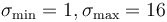 and therefore
. By default 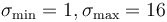 and therefore  .
.
If the input image is grayscale, the features will be calculated using double precision (32-bit images). In the case of RGB input images, the features will be RGB as well.
The different available 2D image features are:
- Gaussian blur: performs
 individual convolutions with Gaussian kernels with the normal variations of . The larger the radius the more blurred the image becomes until the pixels are homogeneous.
individual convolutions with Gaussian kernels with the normal variations of . The larger the radius the more blurred the image becomes until the pixels are homogeneous. - Sobel filter: calculates an approximation of the gradient of the image intensity at each pixel. Gaussian blurs with varying as usual are performed prior to the filter.
- Hessian: Calculates a Hessian matrix
 at each pixel. Prior to the application of any filters, a Gaussian blur with varying is performed. The final features used for pixel classification, given the Hessian matrix
at each pixel. Prior to the application of any filters, a Gaussian blur with varying is performed. The final features used for pixel classification, given the Hessian matrix  are calculated thus:
are calculated thus:
- Module:
 .
. - Trace:
 .
. - Determinant:
 .
. - First eigenvalue: 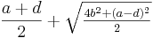.
- Second eigenvalue: 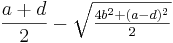.
- Orientation: 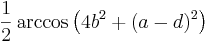 This operation returns the orientation for which the second derivative is maximal. It is an angle returned in radians in the range 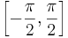 and corresponds to an orientation without direction. The orientation for the minimal second derivative can be obtained by adding (or subtracting)
 .
. - Gamma-normalized square eigenvalue difference: 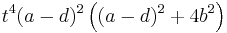, where 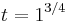.
- Square of Gamma-normalized eigenvalue difference:
 , where .
, where .
- Module:
- Difference of gaussians: calculates two Gaussian blur images from the original image and subtracts one from the other. values are varied as usual, so 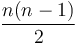 feature images are added to the stack.
- Membrane projections: enhances membrane-like structures of the image through directional filtering. The initial kernel for this operation is hardcoded as a
 zero matrix with the middle column entries set to 1. Multiple kernels are created by rotating the original kernel by 6 degrees up to a total rotation of 180 degrees, giving 30 kernels. Each kernel is convolved with the image and then the set of 30 images are Z-projected into a single image via 6 methods:
zero matrix with the middle column entries set to 1. Multiple kernels are created by rotating the original kernel by 6 degrees up to a total rotation of 180 degrees, giving 30 kernels. Each kernel is convolved with the image and then the set of 30 images are Z-projected into a single image via 6 methods:
- sum of the pixels in each image
- mean of the pixels in each image
- standard deviation of the pixels in each image
- median of the pixels in each image
- maximum of the pixels in each image
- minimum of the pixels in each image
- Each of the 6 resulting images is a feature. Hence pixels in lines of similarly valued pixels in the image that are different from the average image intensity will stand out in the Z-projections.
- Mean, Variance, Median, Minimum, Maximum: the pixels within a radius of pixels from the target pixel are subjected to the pertinent operation (mean/min etc.) and the target pixel is set to that value.
- Anisotropic diffusion: the anisotropic diffusion filtering from Fiji with
 iterations, smoothing per iterations,
iterations, smoothing per iterations,  , 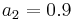, and an edge threshold set to the membrane size.
, 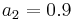, and an edge threshold set to the membrane size. - Bilateral filter: is very similar to the Mean filter but better preserves edges while averaging/blurring other parts of the image. The filter accomplishes this task by only averaging the values around the current pixel that are close in color value to the current pixel. The 'closeness' of other neighborhood pixels to the current pixels is determined by the specified threshold. I.e. for a value of 10 each pixel that contributes to the current mean have to be within 10 values of the current pixel. In our case, we combine spatial radius of 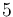 and
 , with a range radius of
, with a range radius of  and
and  .
. - Lipschitz filter: from Mikulas Stencel plugin. This plugin implements Lipschitz cover of an image that is equivalent to a grayscale opening by a cone. The Lipschitz cover can be applied for the elimination of a slowly varying image background by subtraction of the lower Lipschitz cover (a top-hat procedure). A sequential double scan algorithm is used. We use down and top hats combination, with slope 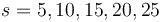.
- Kuwahara filter: another noise-reduction filter that preserves edges. This is a version of the Kuwahara filter that uses linear kernels rather than square ones. We use the membrane patch size as kernel size, 30 angles and the three different criteria (Variance, Variance / Mean and Variance / Mean^2).
- Gabor filter: at the moment this option may take some time and memory because it generates a very diverse range of Gabor filters (22). This may undergo changes in the future. The implementation details are included in this script. The Gabor filter is an edge detection and texture filter, which convolves several kernels at different angles with an image. Each point in a kernel is calculated as 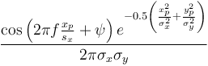. Gabor filters are band-pass filters and therefore implement a frequency transformation.
- Derivatives filter: calculates high order derivatives of the input image (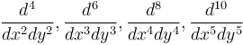) using FeatureJ (it requires enabling the ImageScience update site in the updater).
- Laplacian filter: computes the Laplacian of the input image using FeatureJ (it requires enabling the ImageScience update site in the updater). It uses smoothing scale .
- Structure filter: calculates for all elements in the input image, the eigenvalues (smallest and largest) of the so-called structure tensor using FeatureJ (it requires enabling the ImageScience update site in the updater). It uses smoothing scale and integration scales 1 and 3.
- Entropy: draws a circle of radius
 around each pixel; gets the histogram of that circle split in numBins chunks; then calculates the entropy as 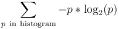, where 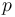 is the probability of each chunk in the histogram. numBins is equal to 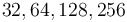. is equal to .
around each pixel; gets the histogram of that circle split in numBins chunks; then calculates the entropy as 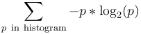, where 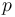 is the probability of each chunk in the histogram. numBins is equal to 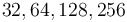. is equal to . - Neighbors: shifts the image in 8 directions by an certain number of pixel, . Therefore creates 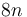 feature images.
When using grayscale images, the input image will be also included as a feature. In the case of color (RGB) images, the Hue, Saturation and Brightness will be as well part of the features.
The detailed implementation of these 2D filters can be found in the source code.
NOTE: The features named Derivatives, Laplacian and Structure belong to the ImageScience suite and need to be activated by enabling the ImageScience update site in the updater.
Training features (3D)
When calling the plugin from the menu command Plugins › Segmentation › Trainable Weka Segmentation 3D the set of available image features will be as follows:
- Gaussian blur: performs individual 3D convolutions with Gaussian kernels with the normal variations of . The larger the radius the more blurred the image becomes until the pixels are homogeneous.
- Hessian: using FeatureJ it computes for each image element (voxel) the eigenvalues of the Hessian, which can be used for example to discriminate locally between plate-like, line-like, and blob-like image structures. More specifically, it calculates the magnitude of the largest, middle and smallest eigenvalue of the Hessian tensor. It requires enabling the ImageScience update site in the updater. It uses smoothing scale .
- Derivatives: calculates high order derivatives of the input image (
 ) using FeatureJ (it requires enabling the ImageScience update site in the updater).
) using FeatureJ (it requires enabling the ImageScience update site in the updater). - Laplacian: computes the Laplacian of the input image using FeatureJ (it requires enabling the ImageScience update site in the updater). It uses smoothing scale .
- Structure: calculates for all elements in the input image, the eigenvalues (smallest and largest) of the so-called structure tensor using FeatureJ (it requires enabling the ImageScience update site in the updater). It uses smoothing scale and integration scales 1 and 3.
- Edges: detects edges using Canny edge detection, which involves computation of the gradient magnitude, suppression of locally non-maximum gradient magnitudes, and (hysteresis) thresholding. Again, this feature uses FeatureJ so it requires enabling the ImageScience update site in the updater. It uses smoothing scale .
- Difference of Gaussian: calculates two Gaussian blur images from the original image and subtracts one from the other. values are varied as usual, so feature images are added to the stack.
- Minimum, Maximum, Mean, Variance, Median: the voxels within a radius of voxels from the target pixel are subjected to the pertinent operation (mean/min etc.) and the target voxel is set to that value.
Sigma units: all 3D features use a common sigma which is in voxel units. However, since the voxel can be anisotropic, the sigma size will be adjusted accordingly to account for it. Therefore, you need to make sure the input image calibration is correct when you call the plugin.
Feature options
- Membrane thickness: expected value of the membrane thickness, 1 pixel by default. The more accurate, the more precise the filter will be. Only available for 2D features.
- Membrane patch size: this represents the size 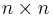 of the field of view for the membrane projection filters. Only available for 2D features.
- Minimum sigma: minimum radius of the isotropic filters used to create the features. By default 1 pixel.
- Maximum sigma: maximum radius of the isotropic filters used to create the features. By default 16 pixels in 2D and 8 pixels in 3D.
Classifier options

The default classifier is FastRandomForest, a multi-threaded version of random forest by Fran Supek, initialized with 200 trees and 2 random features per node. However the user can select any available classifier in the Weka by clicking on "Choose" button. By left-clicking on the classifier text we can also edit the classifier options.
If you do not find the classifier you want, you might have to install the Weka package that includes it. For that, you need to launch the Weka GUI Chooser (by clicking on the Weka button of the left panel of the plugin GUI) and use the Weka Package Manager (under Tools › Package manager). For a step-by-step description on how to install new packages, have a look at this tutorial.
Class names
The classes can be renamed using these text boxes.
Balance classes
The classifier uses by the default all the user traces to train. By clicking on this option, we filter first the classes in order to provide a balanced distribution of the samples. This implies that the less numerous classes will duplicate some of their samples and the more populated classes will lose some of their samples for the sake of even distribution. This option is strongly recommended if we want to give the same importance to all classes. An alternative is to use the Weka CostSensitiveClassifier and set a corresponding cost matrix.
Save feature stack
We can save the features as a stack of images by clicking on this button. It will use the last feature configuration that is available.
Result overlay opacity
This slider sets the opacity of the resulting overlay image. Depending on the image contrast of our input images, we might be interested on adjusting this value.
WEKA
The Weka button launches the Weka GUI Chooser, where we can start all the applications available in Weka:
- Explorer: an environment for exploring data with Weka.
- Experimenter: an environment for performing experiments and conducting statistical tests between learning schemes.
- KnowledgeFlow: this environment supports essentially the same functions as the Explorer but with a drag-and-drop interface. One advantage is that it supports incremental learning.
- SimpleCLI: provides a simple command-line interface that allows direct execution of Weka commands for operating systems that do not provide their own command line interface.
For a complete step-by-step description on how to compare classifiers for image segmentation using the Weka Explorer, have a look at the Trainable Weka Segmentation - How to compare classifiers tutorial.
Macro language compatibility
Trainable Weka Segmentation is completely compatible with the popular ImageJ macro language. Each of the buttons in the GUI are macro-recordable and their commands can be reproduced later from a simple macro file.

The complete list of commands is as follows:
- Start the plugin:
run("Trainable Weka Segmentation");
- Add traces (current ROI) to a class:
- Format:
addTrace( class index, slice number )
- For example, to add the selected ROI of the first slice to the first class, we type:
call("trainableSegmentation.Weka_Segmentation.addTrace", "0", "1");
- Train classifier:
call("trainableSegmentation.Weka_Segmentation.trainClassifier");
- Toggle overlay:
call("trainableSegmentation.Weka_Segmentation.toggleOverlay");
- Get the result label image:
call("trainableSegmentation.Weka_Segmentation.getResult");
- Get probability maps:
call("trainableSegmentation.Weka_Segmentation.getProbability");
- Plot the model performance curves:
call("trainableSegmentation.Weka_Segmentation.plotResultGraphs");
- Apply the current classifier to an image or stack:
- Format:
applyClassifier( input directory, input image or stack, show results flag, store results flag, probability maps flag, store folder)
- Example:
call("trainableSegmentation.Weka_Segmentation.applyClassifier",
"/home/iarganda/data/", "input-image.tif", "showResults=true",
"storeResults=false", "probabilityMaps=false", "");
- Load a classifier from file:
call("trainableSegmentation.Weka_Segmentation.loadClassifier",
"/home/iarganda/classifier.model");
- • Save the current classifier into a file:
call("trainableSegmentation.Weka_Segmentation.saveClassifier",
"/home/iarganda/classifier.model");
- • Load previously saved trace data from an ARFF file:
call("trainableSegmentation.Weka_Segmentation.loadData", "/home/iarganda/data.arff");
- • Save current trace data (feature vectors of traces and classes) into a file:
call("trainableSegmentation.Weka_Segmentation.saveData", "/home/iarganda/data.arff");
- Create new class:
call("trainableSegmentation.Weka_Segmentation.createNewClass", "new-class-name");
- Launch Weka:
call("trainableSegmentation.Weka_Segmentation.launchWeka");
- Enable/disable a specific feature:
- Format:
setFeature( "feature name=true or false" ) - Example (enable Variance filters):
call("trainableSegmentation.Weka_Segmentation.setFeature", "Variance=true");
- Change a class name:
- Format:
changeClassName( class index, class new name ) - Example (change first class name to "background"):
call("trainableSegmentation.Weka_Segmentation.changeClassName", "0", "background");
- Set option to balance the class distributions:
call("trainableSegmentation.Weka_Segmentation.setClassBalance", "true");
- Set membrane thickness (in pixels):
call("trainableSegmentation.Weka_Segmentation.setMembraneThickness", "2");
- Set the membrane patch size (in pixels, NxN):
call("trainableSegmentation.Weka_Segmentation.setMembranePatchSize", "16");
- Set the minimum kernel radius (in pixels):
call("trainableSegmentation.Weka_Segmentation.setMinimumSigma", "2.0");
- Set the maximum kernel radius (in pixels):
call("trainableSegmentation.Weka_Segmentation.setMaximumSigma", "8.0");
- Set a new classifier:
- Format:
setClassifier( classifier class, classifier options ) - Example (change classifier to NaiveBayes):
call("trainableSegmentation.Weka_Segmentation.setClassifier",
"weka.classifiers.bayes.NaiveBayes", "");
- Set the result overlay opacity:
call("trainableSegmentation.Weka_Segmentation.setOpacity", "50");
Complete macro example:
// Open Leaf sample
run("Leaf (36K)");
// start plugin
run("Trainable Weka Segmentation");
// wait for the plugin to load
wait(3000);
selectWindow("Trainable Weka Segmentation v3.2.33");
// add one region of interest to each class
makeRectangle(367, 0, 26, 94);
call("trainableSegmentation.Weka_Segmentation.addTrace", "0", "1");
makeRectangle(186, 132, 23, 166);
call("trainableSegmentation.Weka_Segmentation.addTrace", "1", "1");
// enable some extra features
call("trainableSegmentation.Weka_Segmentation.setFeature", "Variance=true");
call("trainableSegmentation.Weka_Segmentation.setFeature", "Mean=true");
call("trainableSegmentation.Weka_Segmentation.setFeature", "Minimum=true");
call("trainableSegmentation.Weka_Segmentation.setFeature", "Maximum=true");
call("trainableSegmentation.Weka_Segmentation.setFeature", "Median=true");
// change class names
call("trainableSegmentation.Weka_Segmentation.changeClassName", "0", "background");
call("trainableSegmentation.Weka_Segmentation.changeClassName", "1", "leaf");
// balance class distributions
call("trainableSegmentation.Weka_Segmentation.setClassBalance", "true");
// train current classifier
call("trainableSegmentation.Weka_Segmentation.trainClassifier");
// display probability maps
call("trainableSegmentation.Weka_Segmentation.getProbability");
Library use
The plugin GUI is independent from the plugin methods. The methods are implemented in a separate file in a library-style fashion, so they can be called from any other Fiji plugin without having to interact with the GUI. This facilitates its integration with other plugins and allows easy scripting.
For examples on how to use the plugin methods from scripts, have a look at the Trainable Weka Segmentation scripting page.
The API of the WekaSegmentation library is available here.
Versatility
{kind=link}
As a pixel classifier, the Trainable Weka Segmentation presents a wide range of applications such as boundary detection, semantic segmentation, or object detection and localization. All of them at the distance of a few clicks on the plugin GUI and sometimes in combination with other Fiji tools or plugins.
To see who is using Trainable Weka Segmentation and its multiple applications, you can have a look at these publications.
Usage with existing installation of Weka
Weka will automatically load plugins installed in ~/wekafiles. If you already have an existing installation of weka using Java 1.7 and are seeing an error about "java.lang.UnsupportedClassVersionError: weka/filters/unsupervised/attribute/IndependentComponents: Unsupported major.minor version 51.0", then you should remove/rename the ~/wekafiles folder before running Fiji.
Weka core version
Since the 3.2.0 release, Trainable Weka Segmentation uses Weka 3.9.0+ - development version. If you have problems loading models from previous versions of the plugin/library, most likely you need to recreate the models using the new version (see note 1 of the Weka official release).
If you absolutely need to reuse an old model, you can transform it to the new version thanks to a model migrator tool provided by the Weka developers. For more information, check this post in the ImageJ forum.
Troubleshooting
For all questions, suggestions, bug reports and problems related to the Trainable Weka Segmentation plugin or library, please use the ImageJ forum and make sure to check previous posts that might have been done covering the same topic.
Citation
Please note that Trainable Weka Segmentation is based on a publication. If you use it successfully for your research please be so kind to cite our work:
- Arganda-Carreras, I.; Kaynig, V. & Rueden, C. et al. (2017), "Trainable Weka Segmentation: a machine learning tool for microscopy pixel classification.", Bioinformatics (Oxford Univ Press) 33 (15), PMID 28369169, doi:10.1093/bioinformatics/btx180, <https://academic.oup.com/bioinformatics/article-abstract/doi/10.1093/bioinformatics/btx180/3092362/Trainable-Weka-Segmentation-a-machine-learning> (on Google Scholar).
The Trainable Weka Segmentation code has its own citable DOI.
License
This program is free software; you can redistribute it and/or modify it under the terms of the GNU General Public License as published by the Free Software Foundation (http://www.gnu.org/licenses/gpl.txt).
This program is distributed in the hope that it will be useful, but WITHOUT ANY WARRANTY; without even the implied warranty of MERCHANTABILITY or FITNESS FOR A PARTICULAR PURPOSE. See the GNU General Public License for more details.